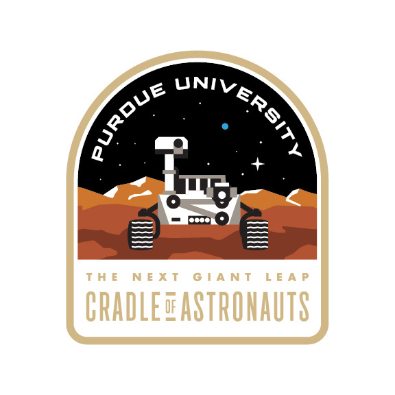
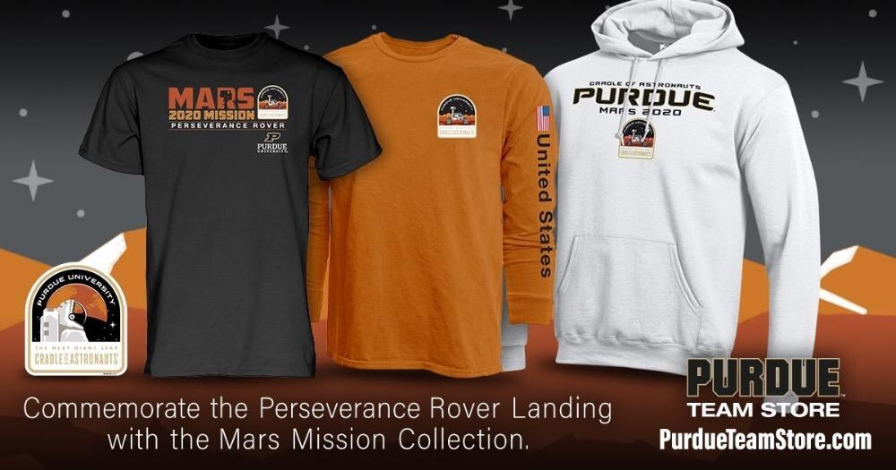
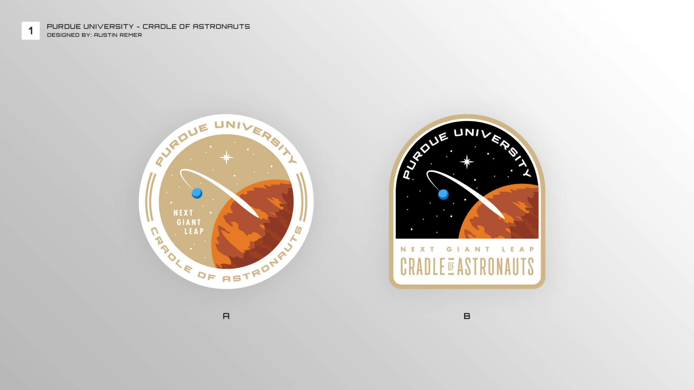
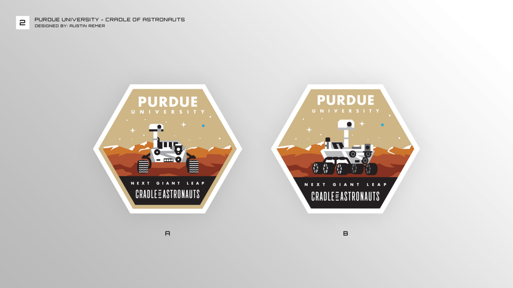
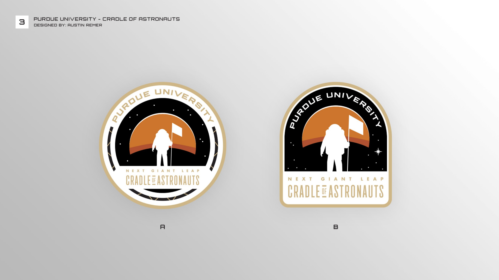
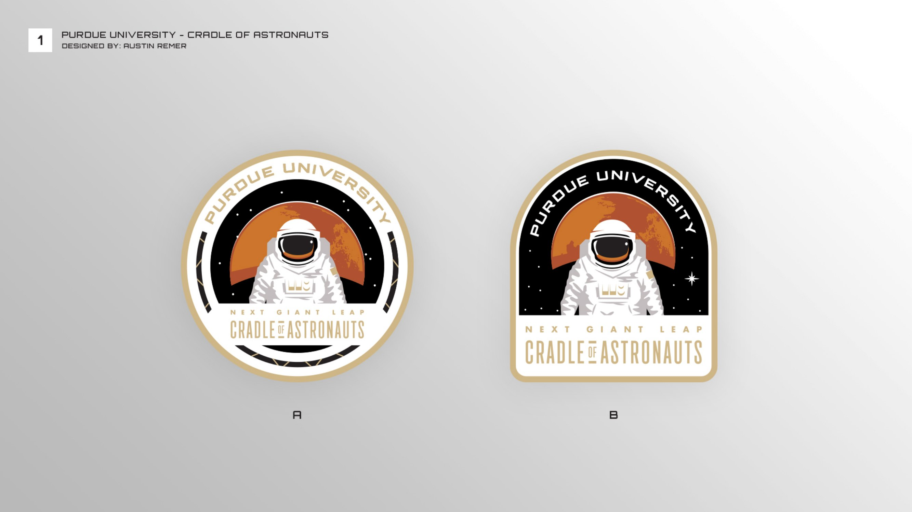
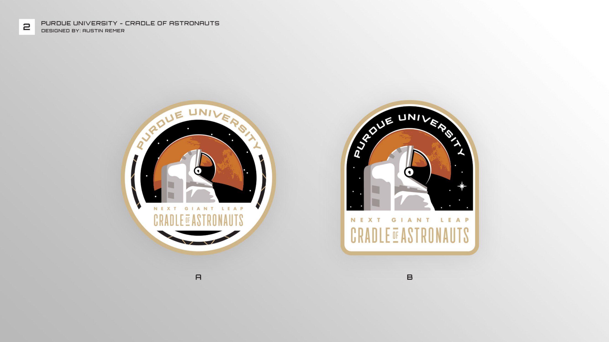

Purdue Space Patch
A patch celebrating Purdue alumni’s part in the 2020 launch of the Mars Perseverance rover, made for sweatshirts, hats, stickers and other merchandise sold through the university.
- My role
- Designer
- Scope
- Patch concepts and final artwork for apparel
- Client
- Purdue University, through Learfield
- Year
- 2020
01The final patches
Purdue used two, both in the arched shape. The rover ran across the Mars Mission collection in the Purdue Team Store, on T-shirts, long sleeves, hoodies and hats. The astronaut became a sticker.


02The concepts
As presentedI presented five directions over two rounds. The first round tried Mars with an orbiting probe, the rover in a hexagon and an astronaut planting a flag. The second moved in closer on the astronaut. Every direction came as a round patch and an arched one, and the arch is the shape Purdue kept.




